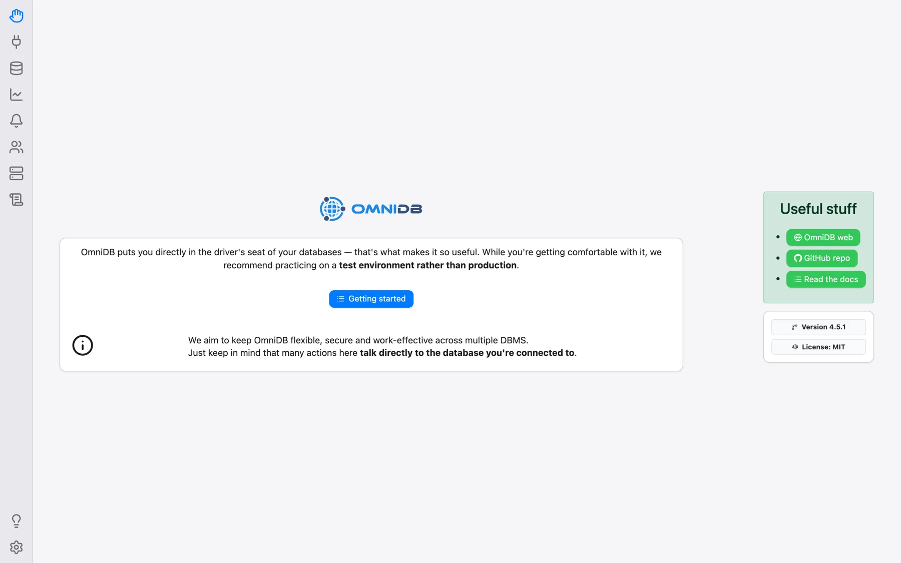
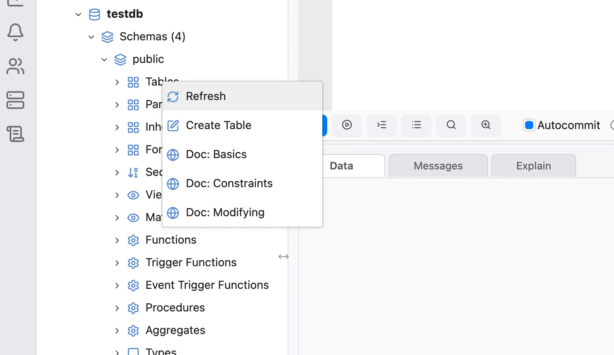
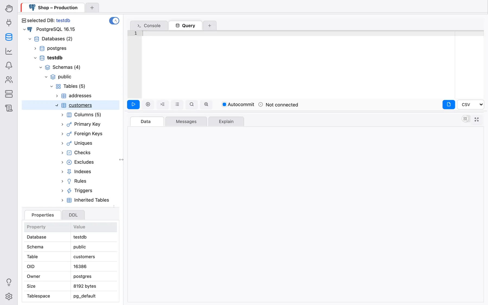
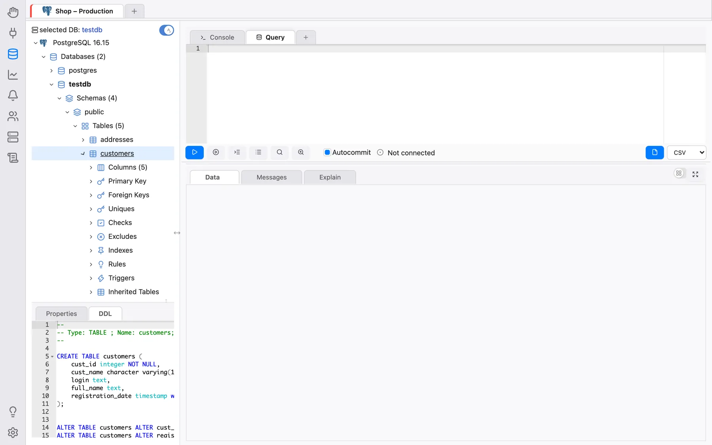
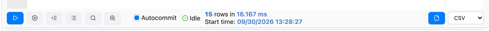
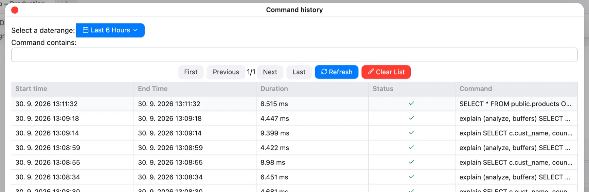

Funciones adicionales
Este capítulo reúne funciones más pequeñas que no necesitan un capítulo propio. Varias funciones que antes se describían aquí tienen ahora sus propios capítulos: Configuración e idiomas, Snippets, Notificaciones, Usuarios conectados (que sustituye al antiguo menú Backends del árbol) y Roles y permisos.
La página de bienvenida
El icono Bienvenida de la parte superior de la barra izquierda abre una página de inicio con el botón Primeros pasos, un recordatorio de que la mayoría de las acciones actúan directamente sobre la base de datos a la que está conectado (por lo que conviene practicar en un entorno de pruebas y no en producción), enlaces al sitio web de OmniDB, al repositorio de GitHub y a esta documentación, y la versión que está ejecutando.

Tutorial Primeros pasos
El icono de la bombilla, cerca de la parte inferior de la barra (Primeros pasos; en la aplicación de escritorio también Ayuda > Primeros pasos), abre una lista de recorridos interactivos que resaltan paso a paso las partes relevantes de la pantalla: crear un usuario de OmniDB (solo en la versión de servidor), crear una conexión de base de datos, crear una conexión de terminal, conocer el panel de snippets, usar una conexión y la pestaña de conexión (disponible una vez que hay una conexión abierta). Terminar el recorrido abandona un recorrido en cualquier momento.
Ayuda contextual
La mayoría de los nodos del árbol (generalmente los de agrupación, como Schemas o Tables) ofrecen ayuda contextual. Se accede a esta función haciendo clic derecho sobre el nodo del árbol. Al hacer clic en la opción Doc: …, OmniDB abre la página específica de la documentación de PostgreSQL en línea en su navegador web (el navegador predeterminado del sistema en la aplicación de escritorio, o una nueva pestaña cuando se ejecuta como OmniDB Server basado en navegador). También elige la versión de documentación adecuada para el servidor PostgreSQL al que está conectado.

Propiedades y DDL
Al hacer clic en la mayoría de los objetos de la vista de árbol (tablas, secuencias, vistas, roles, bases de datos, etc.), el usuario podrá ver una lista muy completa de propiedades del objeto.

En el otro panel, llamado DDL, el usuario podrá ver el código fuente DDL en SQL
que se puede usar para recrear el objeto, incluido su comentario
(COMMENT ON …) y sus privilegios (GRANT …) cuando la base de datos los tiene.
El usuario puede copiar este texto y pegarlo donde desee.

El separador situado encima del panel Propiedades/DDL puede arrastrarse, y el panel (al igual que el propio árbol de la base de datos) puede contraerse con el pequeño botón de alternancia de su separador; en la aplicación de escritorio, también con Ver > Mostrar/ocultar panel de propiedades/DDL y Ver > Mostrar/ocultar árbol de la base de datos.
Exportar datos
La Pestaña de consulta puede guardar los resultados de su consulta en un archivo CSV, TSV, XLSX, JSON, XML o Markdown. Elija el formato en la lista desplegable junto al botón Exportar datos y haga clic en el botón: OmniDB vuelve a ejecutar la consulta en segundo plano y escribe el resultado completo en el archivo (la exportación puede cancelarse mientras se ejecuta).
- En la aplicación de escritorio, se abre un diálogo nativo Guardar como para que elija dónde guardar el archivo, y OmniDB lo confirma con Archivo exportado a: ….
- En el navegador (versión de servidor), el área de resultados muestra El archivo está listo. con un enlace Guardar que lo descarga.

Los archivos CSV y TSV usan la codificación configurada en Configuración > Exportar > Codificación
CSV/TSV (predeterminada: UTF-8 con BOM), y los archivos CSV el Delimitador CSV configurado allí
(predeterminado ;). Los archivos exportados se guardan en una carpeta temporal dentro del
directorio home de OmniDB, solo puede descargarlos el usuario que los creó y se eliminan automáticamente
pasadas 24 horas.
Exportar como DBML
Haga clic con el botón derecho en un nodo de base de datos del árbol de PostgreSQL y elija Exportar como DBML para generar el esquema completo de la base de datos como un documento DBML (Database Markup Language) — todas las tablas, columnas, tipos de datos, claves primarias, restricciones únicas y de clave foránea, índices y comentarios — mediante una única consulta de introspección en SQL puro adaptada del proyecto pg_dbml.
DBML es un formato de esquema compacto y en texto plano, lo que lo hace muy adecuado para dar
contexto sobre su base de datos a un asistente LLM/IA: pegar un archivo .dbml en un
chat consume muchos menos tokens que pegar un volcado SQL completo o dejar que el modelo ejecute
sus propias consultas de introspección tabla por tabla, mientras sigue describiendo con
precisión cada tabla, columna, tipo y relación.
El archivo generado usa por defecto el nombre <base_de_datos>.dbml. En la
aplicación de escritorio esto abre el diálogo nativo de Guardar, igual que Exportar datos;
en el navegador (servidor) muestra en su lugar un aviso Download/Cancel
(Descargar/Cancelar) — Cancel descarta el archivo generado de inmediato, en vez de
esperar a la limpieza de 24 horas de la carpeta temporal. Por ahora, solo PostgreSQL.
Historial de consultas
Desde la Pestaña de consulta puede hacer clic en el botón Historial de comandos para ver una lista completa, navegable y con búsqueda de los comandos ejecutados en esta conexión, filtrable por rango de fechas y por texto. Consulte Escritura de consultas SQL.

Consola SSH
Además de las conexiones de base de datos, OmniDB puede abrir un terminal SSH completo contra un servidor. Cree una conexión de tipo Terminal en la sección Conexiones, rellenando el servidor SSH, el puerto, el usuario y la contraseña o la clave privada (consulte Creación de usuarios y conexiones). Ábrala desde el + al final de la franja de pestañas de conexión → Consolas SSH, o con Conectar en su formulario. El terminal se abre como su propia pestaña de conexión; la clave de host del servidor debe ser ya conocida; consulte Seguridad y servidor multiusuario.